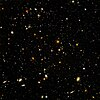

universe

Definition: The universe is all of space and time and their contents, including planets, stars, galaxies, and all other forms of matter and energy. The Big Bang theory is the prevailing cosmological description of the development of the universe. According to this theory, space and time emerged together 13.787±0.020 billion years ago, and the universe has been expanding ever since the Big Bang. While the spatial size of the entire universe is unknown, it is possible to measure the size of the observable universe, which is approximately 93 billion light-years in diameter at the present day.
Source: Wikipedia
Wikipedia Page (Something wrong with this association? Let us know.)
Wikidata Page (Something wrong with this association? Let us know.)
Occurs in: